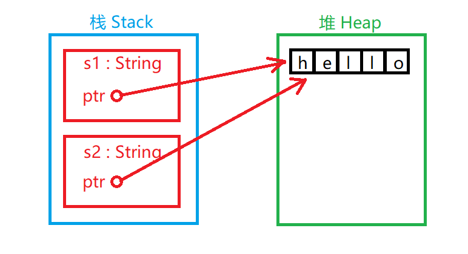
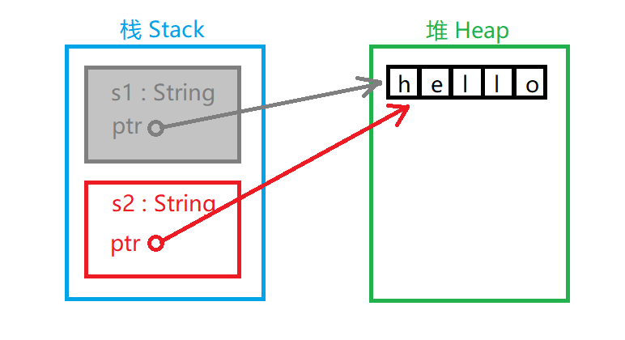

Rust の所有権
コンピュータプログラムは実行時に、使用するメモリリソースを管理しなければなりません。
ほとんどのプログラミング言語にはメモリを管理する機能があります：
C/C++ のような言語は主に手動でメモリを管理します。開発者はメモリリソースを手動で割り当て、解放する必要があります。しかし開発効率を高めるために、プログラムの機能に影響がなければ、多くの開発者はメモリをすぐに解放する習慣がありません。そのため、手動によるメモリ管理はしばしばリソースの無駄を引き起こします。
Java 言語で書かれたプログラムは仮想マシン（JVM）上で実行され、JVM にはメモリリソースを自動的に回収する機能があります。しかしこの方法はしばしば実行時効率を低下させるため、JVM は可能な限りリソースを回収しません。そのためプログラムは大きなメモリリソースを占有することになります。
所有権はほとんどの開発者にとって新しい概念です。これは Rust 言語がメモリを効率的に使用するために設計された構文メカニズムです。所有権の概念は、Rust がコンパイル段階でメモリリソースの有用性をより効率的に分析し、メモリ管理を実現するために生まれた概念です。
所有権の規則
所有権には次の3つの規則があります：
- Rust のすべての値には変数があり、それをその所有者と呼びます。
- 一度に持てる所有者は1人だけです。
- 所有者がプログラムの実行スコープにいないとき、その値は削除されます。
この3つの規則は所有権の概念の基礎です。
次に、所有権の概念に関連する概念を紹介します。
変数スコープ
次のプログラムを使って変数のスコープの概念を説明します：
{
// 在声明以前，变量 s 无效
let s = "サンプル";
// 这里是变量 s 的可用范围
}
// 变量范围已经结束，变量 s 无效変数のスコープは変数の属性の1つで、変数の有効範囲を表します。デフォルトでは変数の宣言から始まり、変数が存在するスコープが終わるまで有効です。
メモリと割り当て
変数を定義して値を代入すると、その変数の値はメモリ内に存在します。これはよくあることです。しかし、保存するデータの長さが不明な場合（ユーザーが入力した文字列など）、定義時にデータの長さを確定できないため、コンパイル段階でプログラムに固定長のメモリ空間を割り当てさせてデータを保存することもできません。（可能な限り大きな空間を割り当てれば解決できると言う人もいますが、この方法はあまりスマートではありません）。そこで、プログラムの実行時にプログラム自身がメモリを割り当てて使用する仕組み（ヒープ）が必要になります。この章で述べるすべての「メモリリソース」は、ヒープが占めるメモリ空間を指します。
割り当てがあれば解放もあります。プログラムは特定のメモリリソースを永続的に占有することはできません。したがって、リソースが無駄になるかどうかを決める重要な要素は、リソースが適時に解放されるかどうかです。
文字列のサンプルプログラムを C 言語で同等に書くと次のようになります：
char *s = strdup("サンプル");
free(s); // s のリソースを解放
}
明らかに、Rust では文字列 s のリソースを解放するために free 関数を呼び出していません（C 言語では正しくない書き方だと分かっています。"サンプル" はヒープにないためです。ここではヒープにあると仮定します）。Rust が解放の手順を明示しないのは、変数のスコープが終了するときに、Rust コンパイラがリソース解放関数を呼び出す手順を自動的に追加するためです。
この仕組みは一見とても単純です。プログラマが適切な場所にリソース解放関数の呼び出しを追加するのを助けるだけです。しかし、この単純な仕組みは、プログラマーを史上最も悩ませてきたプログラミング問題を効果的に解決できます。
変数とデータのやり取りの方法
変数とデータのやり取りの方法には、主にムーブ（Move）とクローン（Clone）の2つがあります：
ムーブ
複数の変数は Rust では異なる方法で同じデータとやり取りできます：
let x = 5; let y = x;
このプログラムは値 5 を変数 x に束縛し、次に x の値をコピーして変数 y に代入します。これでスタックには2つの値 5 が存在します。この場合のデータは「基本データ」型のデータであり、ヒープに保存する必要はありません。スタック上にあるデータの「ムーブ」方法は直接コピーであり、これには長い時間や多くのストレージスペースはかかりません。「基本データ」型には次のものがあります：
- すべての整数型。例：i32、u32、i64 など。
- ブール型 bool。値は true または false。
- すべての浮動小数点型、f32 と f64。
- 文字型 char。
- 上記の型のデータのみを含むタプル（Tuples）。
しかし、やり取りするデータがヒープ内にある場合は別の状況になります：
let s1 = String::from("hello");
let s2 = s1;最初のステップでは、値 "hello" を持つ String オブジェクトを生成します。この "hello" は長さが不明なデータのようなものと考えられ、ヒープに保存する必要があります。
2番目のステップの状況は少し異なります（これは完全に本当ではありません。比較の参考のためだけです）：

図のように、2つの String オブジェクトがスタックにあり、各 String オブジェクトにはヒープ内の "hello" 文字列を指すポインタがあります。s2 に代入するとき、スタック上のデータだけがコピーされ、ヒープ内の文字列は元のままです。
先ほど説明したように、変数がスコープを外れると、Rust は自動的にリソース解放関数を呼び出し、その変数のヒープメモリをクリーンアップします。しかし、s1 と s2 の両方が解放されると、ヒープ領域の "hello" が2回解放されることになり、これはシステムに許可されません。安全性を確保するため、s2 に代入する時点で s1 はすでに無効になっています。そうです、s1 の値を s2 に代入した後、s1 はそれ以上使用できません。次のプログラムは間違いです：
let s1 = String::from("hello");
let s2 = s1;
println!("{}, world!", s1); // 错误！s1 已经失效
したがって、実際の状況は次のとおりです：

s1 は名ばかりで実質的には存在しません。
クローン
Rust はプログラムの実行コストを可能な限り低く抑えようとするため、デフォルトでは長さが大きいデータはヒープに保存され、ムーブ方式でデータのやり取りを行います。しかし、データを単純に複製して他の用途に使う必要がある場合は、データの2つ目のやり取り方法であるクローンを使用できます。
例
let s1 = String::from("hello");
let s2 = s1.clone();
println!("s1 = {}, s2 = {}", s1, s2);
}
実行結果：
s1 = hello, s2 = hello
ここでは実際にヒープ内の "hello" を複製しているため、s1 と s2 はそれぞれ別の値に束縛され、解放時にも2つのリソースとして扱われます。
もちろん、クローンは複製が必要な場合にのみ使用します。データの複製にはより多くの時間がかかるからです。
関数に関する所有権の仕組み
変数にとってこれは最も複雑なケースです。
変数を関数の引数として他の関数に渡す場合、所有権を安全に扱うにはどうすればよいでしょうか？
次のプログラムは、この場合の所有権の仕組みの動作原理を示しています：
例
let s = String::from("hello");
// s は有効として宣言される
takes_ownership(s);
// s の値が引数として関数に渡される
// したがって s はムーブされたとみなされ、ここからは無効
let x = 5;
// x は有効として宣言される
makes_copy(x);
// x の値が引数として関数に渡される
// しかし x は基本型なので、まだ有効
// ここではまだ x を使用できるが、s は使用できない
} // 関数が終了すると、x は無効になり、次に s も無効になる。ただし s はムーブ済みなので、解放する必要はない
fn takes_ownership(some_string: String) {
// String 引数 some_string が渡され、有効
println!("{}", some_string);
} // 関数が終了すると、引数 some_string はここで解放される
fn makes_copy(some_integer: i32) {
// i32 引数 some_integer が渡され、有効
println!("{}", some_integer);
} // 関数が終了すると、引数 some_integer は基本型なので、解放の必要はない
変数を関数の引数として渡す場合、それはムーブと同じ効果になります。
関数の戻り値における所有権の仕組み
例
let s1 = gives_ownership();
// gives_ownership はその戻り値を s1 にムーブする
let s2 = String::from("hello");
// s2 は有効として宣言される
let s3 = takes_and_gives_back(s2);
// s2 は引数としてムーブされ、s3 が戻り値の所有権を獲得する
} // s3 は無効になり解放される。s2 はムーブされ、s1 は無効になり解放される。
fn gives_ownership() -> String {
let some_string = String::from("hello");
// some_string は有効として宣言される
return some_string;
// some_string は戻り値として関数の外にムーブされる
}
fn takes_and_gives_back(a_string: String) -> String {
// a_string は有効として宣言される
a_string // a_string は戻り値として関数の外にムーブされる
}
関数の戻り値として扱われる変数の所有権は、関数の外にムーブされ、呼び出し元の場所に返されます。直接無効化されて解放されることはありません。
参照と借用
参照（Reference）は C++ 開発者にとって比較的馴染みのある概念です。
ポインタの概念に精通していれば、それを一種のポインタと見なすことができます。
実質的に「参照」は変数への間接的なアクセス方法です。
例
let s1 = String::from("hello");
let s2 = &s1;
println!("s1 is {}, s2 is {}", s1, s2);
}
実行結果：
s1 is hello, s2 is hello
&演算子を使って変数の「参照」を取得できます。
変数の値が参照される場合、変数自体が無効と見なされることはありません。「参照」はスタック内で変数の値をコピーしていないからです：

関数の引数渡しも同じ理屈です：
例
let s1 = String::from("hello");
let len = calculate_length(&s1);
println!("The length of '{}' is {}.", s1, len);
}
fn calculate_length(s: &String) -> usize {
s.len()
}
実行結果：
The length of 'hello' is 5.
参照は値の所有権を取得しません。
参照は値の所有権を賃借（Borrow）することしかできません。
参照自体も一つの型であり、一つの値を持ちます。この値は別の値が存在する位置を記録しますが、参照は指し示す値の所有権を持ちません：
例
let s1 = String::from("hello");
let s2 = &s1;
let s3 = s1;
println!("{}", s2);
}
このプログラムは正しくありません：s2 が賃借していた s1 は既に所有権を s3 に移動しているため、s2 は引き続き s1 の所有権を賃借して使用することができません。s2 でその値を使用する必要がある場合は、再度賃借しなければなりません：
例
let s1 = String::from("hello");
let mut s2 = &s1;
let s3 = s1;
s2 = &s3; // 再度 s3 から所有権を賃借する
println!("{}", s2);
}
このプログラムは正しいです。
参照は所有権を持たない以上、所有権を賃借しても、使用権のみを享受します（これは家を借りるのと同じ理屈です）。
賃借した権利を利用してデータを変更しようとすると、阻止されます：
例
let s1 = String::from("run");
let s2 = &s1;
println!("{}", s2);
s2.push_str("oob"); // エラー、賃借した値を変更することは禁止されています
println!("{}", s2);
}
このプログラムでは、s2 が s1 の値を変更しようとして阻止されました。賃借した所有権では所有者の値を変更できません。
もちろん、可変の賃借方式も存在します。家を借りる場合を例にとると、もし管理規約で所有者が家の構造を変更できると定められており、所有者が賃貸時に契約書であなたにその権利を付与すると宣言していれば、あなたは家を改装することができます：
例
let mut s1 = String::from("run");
// s1 は可変です
let s2 = &mut s1;
// s2 は可変の参照です
s2.push_str("oob");
println!("{}", s2);
}
このプログラムは問題ありません。&mut を使用して可変の参照型を修飾します。
可変参照は不変参照と比較して権限が異なるだけでなく、可変参照は多重参照を許可しませんが、不変参照は多重参照を許可します：
例
let r1 = &mut s;
let r2 = &mut s;
println!("{}, {}", r1, r2);
このプログラムは正しくありません。s に対して多重の可変参照を行っているためです。
Rust が可変参照に対してこのような設計をしているのは、主に並行状態でのデータアクセス衝突を考慮したものであり、コンパイル段階でこのような事態の発生を防いでいます。
データアクセス衝突が発生する必要条件の一つは、データが少なくとも一つの使用者によって書き込まれ、同時に少なくとも一つの他の使用者によって読み書きされることです。そのため、ある値が可変参照されている間は、再度いかなる参照も許可されません。
ダングリング参照（Dangling References）
これは名前を変えただけの概念です。ポインタの概念を持つプログラミング言語に当てはめると、実際にアクセス可能なデータを指していないポインタを指します（注意：必ずしもヌルポインタとは限らず、既に解放されたリソースの場合もあります）。それらは吊るす物体を失ったロープのようなものなので、「垂れ下がり参照」と呼ばれます。
「垂れ下がり参照」は Rust 言語では許可されておらず、もしあればコンパイラがそれを検出します。
以下はダングリング参照の典型的なケースです：
例
let reference_to_nothing = dangle();
}
fn dangle() -> &String {
let s = String::from("hello");
&s
}
明らかに、dangle 関数の終了に伴い、そのローカル変数の値自体は戻り値として扱われることなく解放されました。しかし、その参照は返却されています。この参照が指し示す値はもはや存在が確定できないため、その出現は許可されません。
その他の拡張